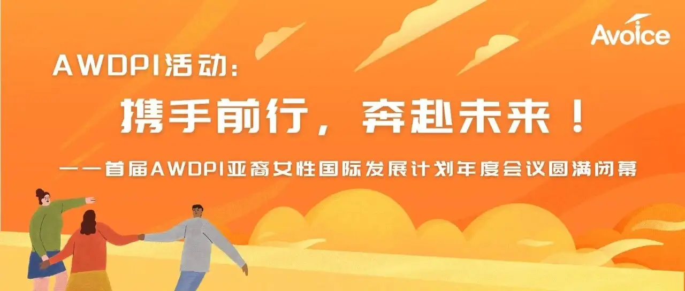

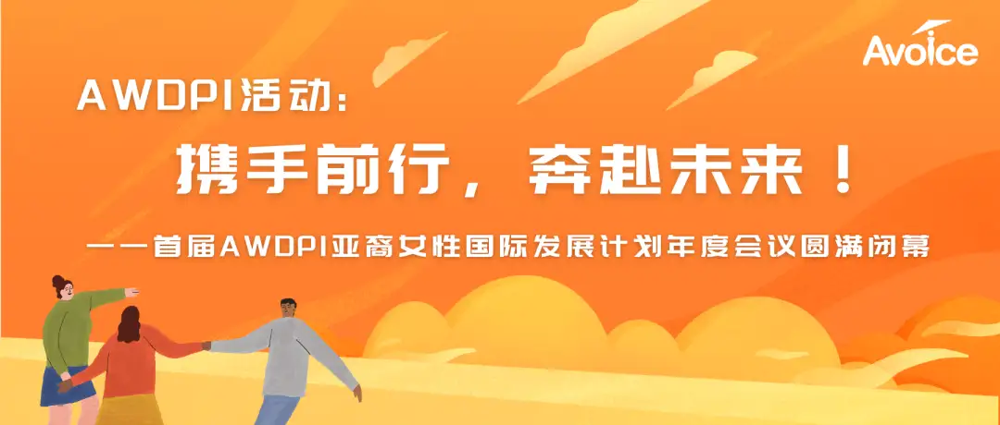

2024年5月17日至19日 ，首届AWDPI亚裔女性国际发展计划年度会议于浙江宁波成功举办！AWDPI联合创始人、理事、顾问、各部门负责人及优秀志愿者代表参加了本次年会。
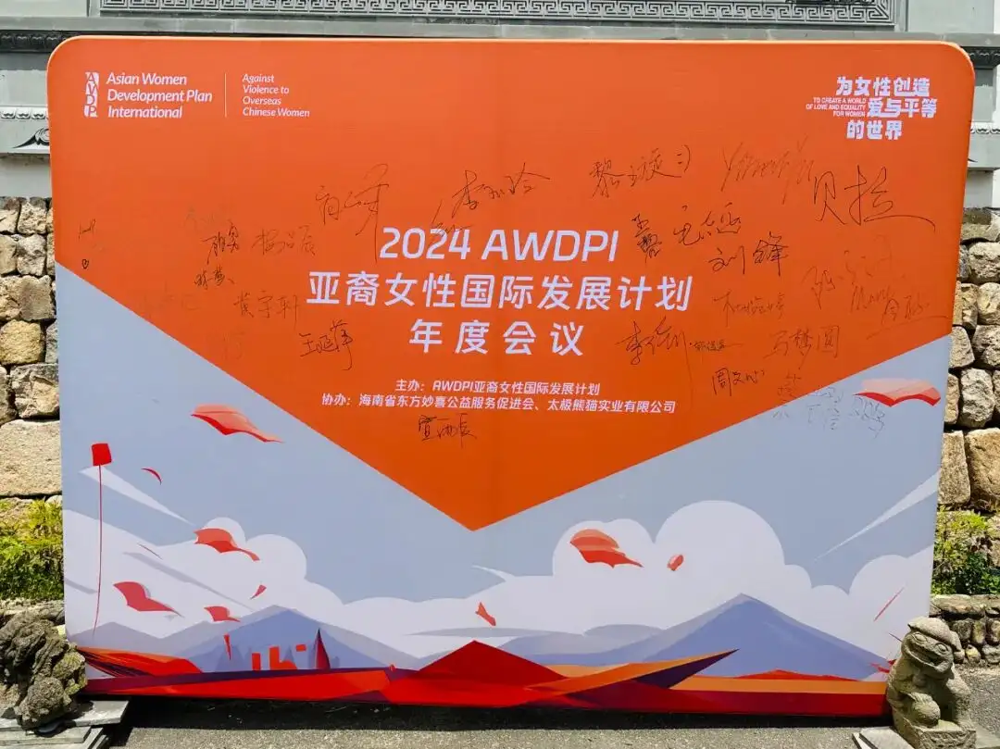
此次盛会不仅是对过去一年辛勤工作的回顾，更是对未来携手共筑爱与平等女性家园的展望。 在宁波的山水间，大家相知并建立起更深的链接，共同见证了AWDPI过去一年的辉煌成就，也共同展望了未来为更多受家暴威胁的女性创造安全、平等生存和发展环境的宏伟蓝图。
年会活动概况
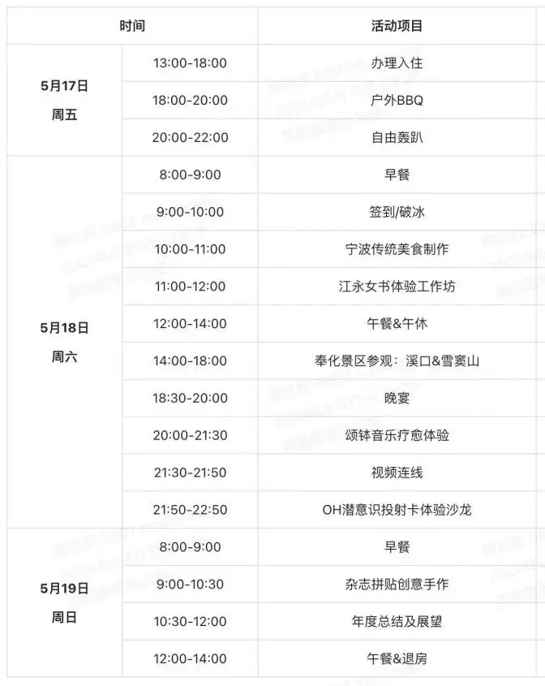
文化交融，心灵疗愈
年会期间，AWDPI团队共同体验了一系列丰富多彩的活动。从宁波传统美食制作到江永女书体验，与会者得以深刻感受中华文化的博大精深以及女性文字带来的力量；从奉化景区的自然美景到颂钵音乐疗愈体验、杂志拼贴、OH潜意识投射卡沙龙，大家共同体验了一场心灵与自然的交融之旅。这些活动让大家在忙碌的学习、工作之余得到了放松与疗愈，更在无形中加深了彼此间的情感联系与认同。
江永女书体验
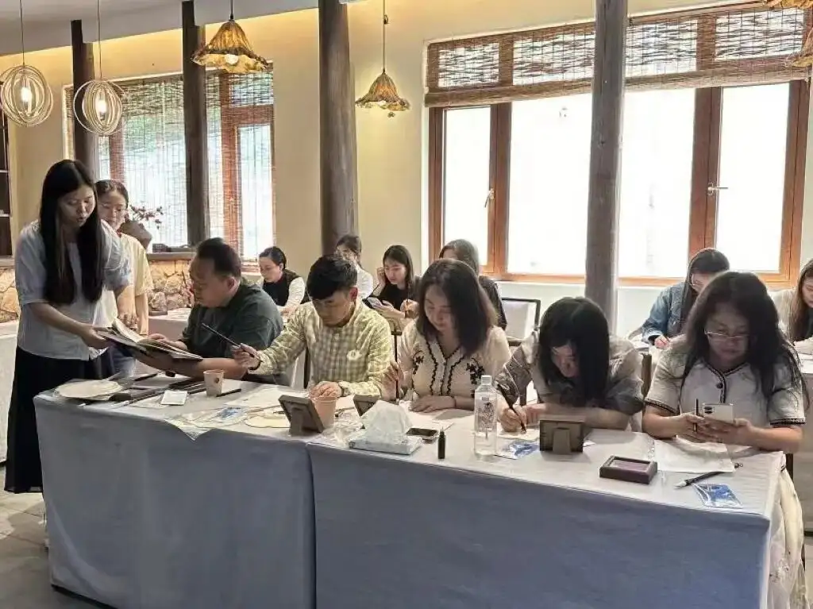
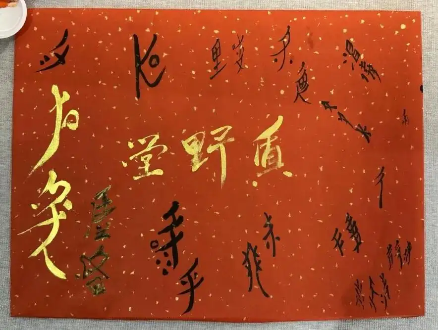
宁波美食制作
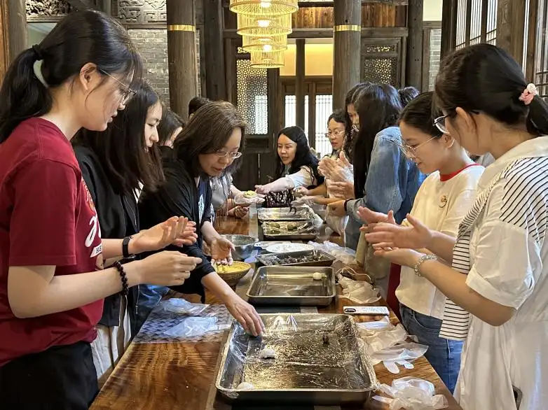
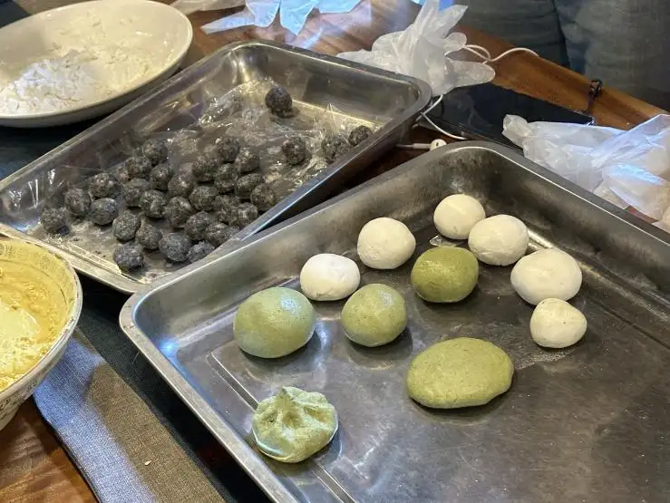
颂钵音乐疗愈
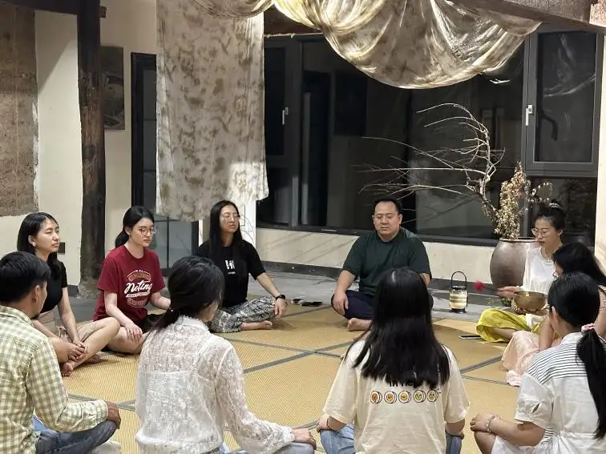
杂志拼贴创作
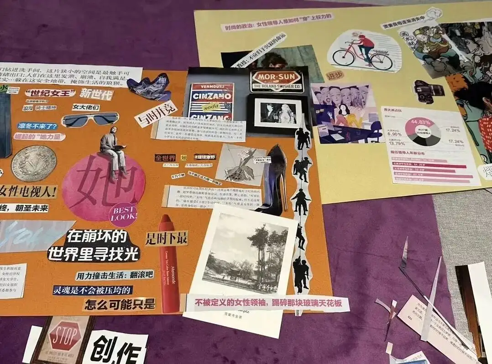
OH潜意识投射卡沙龙
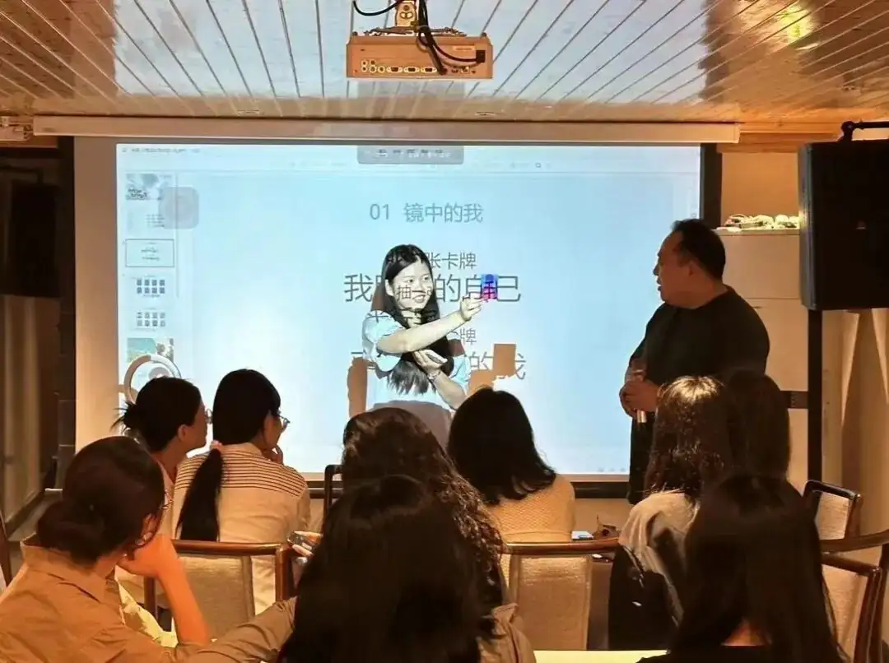
携手前行，
共筑爱与平等的女性家园
年会落幕时，团队共同回顾了AWDPI过去一年的工作成果与经验，并对未来的发展方向和目标进行了展望。
未来，AWDPI团队将继续携手前行，为全球范围内受家暴威胁的华侨华人女性提供全方位、持续性的保护和救助，不断加强与国际社会的交流与合作，共同为构建一个安全、平等、充满爱的女性家园而努力，为需要帮助的女性点燃希望的灯塔，让她们在爱与平等的照耀下重获新生！
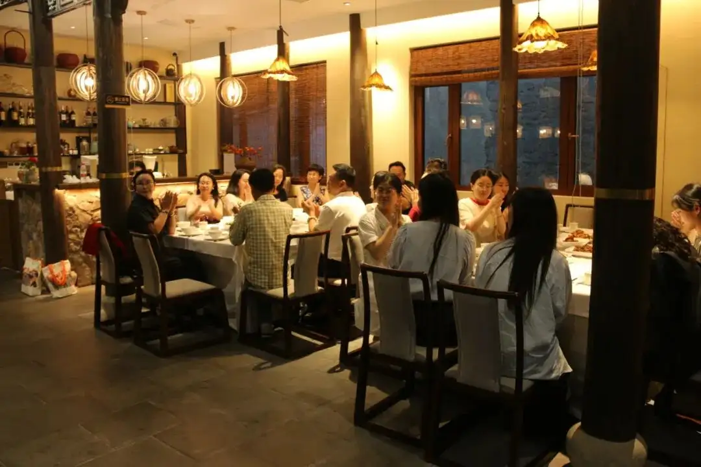
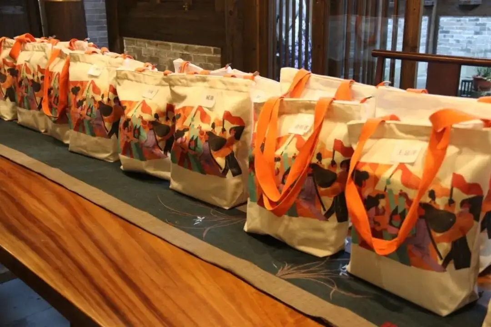
致敬与感谢：
每一位志愿者都是最闪耀的星
首届AWDPI亚裔女性国际发展计划年会的成功举办离不开每一位志愿者的辛勤付出和无私奉献。 正是有了Ta们的默默支持和坚定信念，团队才能凝聚起来，为那些身处困境的女性提供坚实的保护。
最后，我们向所有志愿者表示最崇高的敬意和最诚挚的感谢！你们是这个组织最宝贵的财富和力量源泉，同时，我们也期待与更多的合作伙伴建立联系，共同为构建爱与平等的女性家园贡献力量！
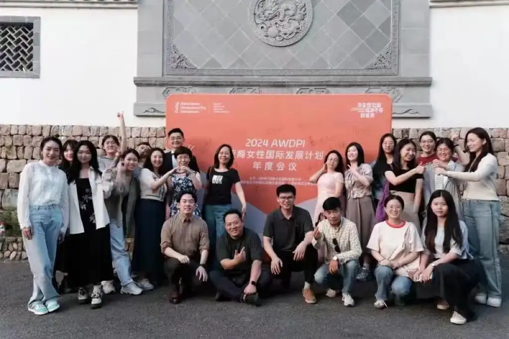
文稿 | 陈子涵
图片 | 年会筹备组
审校 | 秦科
排版/封面｜杜婉婷